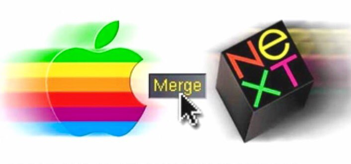

Think Different
In the 90’s Apple was going through a really bad time as company. After Steve Jobs was fired Apple launched a lot of products none of which had much innovation on it. Because of that Apple’s sales were worst than ever, getting at it’s worst in 1997 where apple was near bankruptcy. At this time John Sculley had already left the company and it currently CEO was Gil Amilio. At the time Apple had a problem with its operating system and although Apple was already trying to work on a new operating system, Amelio arrived at the conclusion that the operating system wouldn’t be finished on time. And so, Apple needed a company to provide them with a decent operating system and that is where Steve Jobs company NeXT comes in. Apple was looking at various companies that were able to do their next operating system but decided to go with NeXT because it had better technology, a complete solution, and Steve Jobs. And so, Apple bought NeXT for $429 million.

Now that Apple had Steve Jobs once again running the company he had once created many years ago signs that Jobs is seriously involved in the operation of the company caused the stock price to rise from $13 to $20 a share.
Another important information was presented at Macworld in August 1997. During his speech, Jobs communicated that he and other people are working to improve the situation in Apple and outlined the reasons for the decline in product sales over the past few years. Next, he announced something surprising - a partnership agreement with Microsoft. How did it happen that two competing companies suddenly decided to cooperate? After Amelio was fired, the phone call with Gates was one of the first that Jobs had. He phoned Bill and said that he needs help. Microsoft was accused of infringing Apple patents, Jobs told Gates that if we continue to litigate, Apple could win a billion dollars in a patent case in a few years, he also pointed out that he realizes that Apple will not last that long in a state of conflict. Jobs suggested to solve this problem right
He wants Microsoft to commit to developing software for Mac and investing in Apple, thanks to which Microsoft will have a share in the future success of Apple. An additional incentive for Microsoft to invest in Apple was the fact that support for its own competitor may help Bill Gates' company with its problems with its antitrust case. Finally, the contract between the two companies was prepared in just 4 weeks. During the presentation at Macworld, Jobs described the terms of the contract with Microsoft. Apple was supposed to set Internet Explorer as the default browser in Macintosh, but it was possible to change the default browser. Microsoft will invest $ 150 million in Apple and will get non-voting shares. In addition, Microsoft committed to releasing Microsoft Office on Macintosh for the next five years.
At the end, a connection was made to Bill Gates, his face appeared on the screen above the stage and Gates gave a speech from Microsoft's headquarters. The news of Microsoft's investment and Jobs' involvement in the company's operations caused a positive effect on the company’s shares.
At the end of the day, the share price went up by 33%.
The next step was to remind people what makes Apple stand out. Jobs stated that they must prove that Apple is still alive, and Apple still means something special. For this purpose, Jobs contacted Lee Clow, who was involved in the creation of the famous Apple’s "1984" ad for the Macintosh. As a result, Lee Clow in cooperation with Apple, created the Think different campaign. Instead of a series of advertisements presenting individual products, it was decided to conduct an image campaign. Its aim was not to show what computers can do, but what creative people can do with the help of computers. The famous advertisement showed creative people who took risks, paid no attention to failures, and put their careers at risk, acting in a way different from what is generally accepted.
Think Different Ad narrated by Steve Jobs
The next big phase
The iMac
The 1998 iMac G3 was a pivotal product for Apple, designed by Jony Ive and introduced by Steve Jobs. It marked a bold departure from traditional PC design with its translucent, colorful casing and integrated all-in-one design. Launched in Bondi Blue, it combined aesthetics with user-friendly features like USB connectivity and a lack of legacy ports, targeting simplicity and the emerging internet age.
The iMac G3 revitalized Apple, reversing its financial struggles and reestablishing the company's innovative image. Its success laid the foundation for future hits like the iPod and iPhone, while influencing modern product design with its focus on form and function
The iPod
The iPod, launched in 2001, was Apple's groundbreaking portable music player that revolutionized how people listened to music. Designed by Jony Ive and driven by Steve Jobs' vision, it featured a sleek design, a click-wheel interface, and the ability to store 1,000 songs in your pocket. Paired with iTunes, it streamlined music organization and purchases, becoming a cultural phenomenon.
The iPod's success transformed Apple from a niche computer company into a dominant consumer electronics brand. It generated massive revenue, built brand loyalty, and paved the way for innovations like the iPhone. Its impact on the music industry was equally profound, shifting it toward digital distribution and forever changing listening habits.
First iPod Ad
The iPhone
And now, the year is 2007 and on a cold January in San Francisco Steve Jobs is about to present a product that would change how we communicate forever.
The iPhone, unveiled by Steve Jobs on January 9, 2007, at Macworld in San Francisco, redefined the concept of a mobile phone and ushered in a new era of consumer technology. It combined a mobile phone, an iPod, and an internet communicator into a single device, with a sleek design and a groundbreaking multi-touch interface. This convergence of functionalities and innovative user experience made the iPhone a revolutionary product that transformed industries, reshaped social habits, and cemented Apple as a technological powerhouse.
The development of the iPhone was rooted in Apple’s pursuit of simplicity and innovation. After the success of the iPod, Apple sought to expand its product line by venturing into the mobile phone market. Recognizing the shortcomings of existing smartphones, which relied on styluses or physical keyboards, Apple focused on creating a device that emphasized touch and seamless integration of hardware and software. The project, codenamed "Project Purple," began in 2004 and involved a multidisciplinary team of engineers, designers, and software developers.
Steve Jobs envisioned a device that was intuitive and delightful to use. The iPhone's multi-touch screen, powered by capacitive technology, allowed users to interact directly with the display using gestures like pinching, swiping, and tapping. This was paired with iOS, an operating system that prioritized fluidity, accessibility, and the user experience. Apple also developed its proprietary A-series chips to ensure the device's performance met its ambitious goals.
The iPhone revolutionized the tech industry and the world at large in several ways. It redefined the mobile phone, turning it into a portable computer that could handle communication, media consumption, navigation, and productivity. By integrating features like GPS, cameras, and internet access, the iPhone rendered standalone devices like digital cameras, GPS units, and MP3 players obsolete.
Its influence extended beyond hardware. The App Store transformed software distribution, fostering a multibillion-dollar app economy. Social media platforms like Instagram and Snapchat thrived on the iPhone’s camera and connectivity features, changing how people share and consume content. Mobile banking, e-commerce, and gaming also flourished in the app ecosystem, making the smartphone indispensable in daily life.
For Apple, the iPhone was a financial and cultural triumph. It became the company’s flagship product, generating the majority of its revenue and elevating its brand to unprecedented heights. The success of the iPhone turned Apple into the world’s most valuable company, influencing the design and strategy of competing tech firms.
The iPhone reshaped human behavior, fostering an always-connected culture. With the iPhone in hand, people began relying on smartphones for navigation, socialization, shopping, and entertainment. It democratized access to technology, making advanced computing tools available to billions worldwide.
However, its ubiquity also raised concerns about privacy, screen time, and digital addiction. The smartphone era, spearheaded by the iPhone, forced society to grapple with the ethical implications of technology in personal and professional spaces.
Steve Jobs got ill
In October 2003, Jobs was diagnosed with a rare form of pancreatic cancer called a neuroendocrine tumor, which is distinct from the more common and aggressive pancreatic adenocarcinoma. Neuroendocrine tumors grow more slowly and can sometimes be treated successfully if addressed early. Despite this, Jobs initially opted for alternative therapies, including special diets and natural remedies, rather than conventional medical treatment. For nine months, he delayed surgery, a decision he later admitted might not have been the best approach.
In July 2004, Jobs underwent a Whipple procedure, a complex surgical operation to remove the tumor along with parts of his pancreas, bile duct, and small intestine. Although the surgery removed the immediate threat, it marked the beginning of ongoing health complications.
Jobs’s health became a topic of public concern as his appearances grew noticeably frail in the years following his surgery. The removal of part of his pancreas likely affected his body’s ability to regulate insulin and digestion, contributing to his visible weight loss. Jobs, known for his intense privacy, rarely disclosed details of his condition, fueling speculation.
By 2009, his health had worsened. Jobs took a six-month medical leave, during which he underwent a liver transplant in Tennessee. This procedure was likely due to the spread of his neuroendocrine tumor to his liver, a common complication of the disease. While the transplant extended his life, it brought new challenges, including the risk of organ rejection and the need for immunosuppressive medications that could weaken his immune system.
Despite his declining health, Jobs remained deeply involved at Apple, guiding the launch of groundbreaking products like the iPhone, iPad, and MacBook Air. However, his ability to lead became increasingly strained. In January 2011, he announced another medical leave, citing the need to focus on his health. In August of that year, Jobs officially resigned as Apple’s CEO, passing the reins to Tim Cook. He stayed on as Chairman of the Board but was less visible in public.
Steve Jobs passed away on October 5, 2011, at the age of 56, at his home in Palo Alto, California, surrounded by family. The official cause of death was complications from his pancreatic neuroendocrine tumor. In his final months, he concentrated on his family and reflected on his life’s work.
Jobs’s battle with illness underscores his remarkable resilience and unwavering dedication to innovation. Despite his health struggles, he continued to lead Apple during pivotal years, leaving an indelible mark on technology and design.